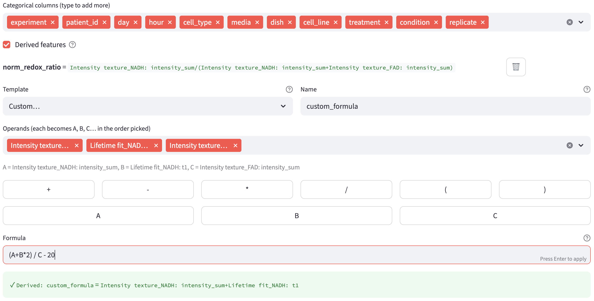
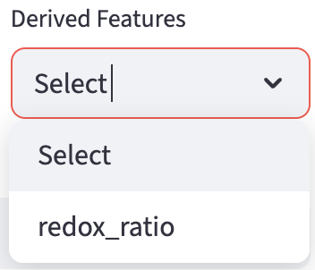

10 Derived Features
FLIM Playground lets users compose derived features from features defined by the feature extractors defined in the previous chapters, potentially from different channels.
An example would be the normalized optical redox ratio, composed from the intensity_sum feature from each of the two channels: NAD(P)H / (FAD + NAD(P)H).
A derived feature travels across three pages:
- It is defined in the
Derived featuresbuilder on the Configuration page. - It is computed during Numerical Feature Extraction, from the features extracted for each channel.
- It is analyzed on the Data Analysis page, where all derived features form a single
Derived Featuresgroup.

10.1 The Derived Features Builder
The builder is revealed by a Derived features checkbox near the bottom of the Configuration page. Its hover ? reads: “Build new features from arithmetic over already-extracted features (e.g. a redox ratio). Each becomes a Derived: name column and, in Data Analysis, a single Derived Features group. Operands may span channels.” The checkbox is ticked automatically for a profile that already defines derived features.
Any derived features already defined for the current profile are listed at the top, each showing its name, its expanded formula, and a 🗑️ button to delete it. Below the list, a new feature is composed from:
- a
Template(a common formula, orCustom…to write your own), - a
Name(placeholdere.g. redox_ratio) — the output column becomesDerived: <name>, and - the operands that fill the formula.
The builder draws its operand choices from the feature extractors currently selected for your channels. If no channel has a feature extractor selected yet, the builder shows “Select feature extractors for your channels first — there are no features to derive from yet.” — configure the extractors first, then come back.
Unlike the rest of the Configuration page, adding or deleting a derived feature is saved immediately — you do not need to click Update Configuration. Derived features are stored per profile, so each extraction profile keeps its own set.
10.2 Templates
Choosing a Template other than Custom… fills in the formula for you and renders one searchable dropdown per operand slot (A, B, …). Four ready-made templates are provided:
| Template | Formula |
|---|---|
Normalized A / (A + B) |
A/(A+B) |
Ratio A / B |
A/B |
Difference A − B |
A-B |
Sum A + B |
A+B |
Each takes two operands: pick a feature for A and a feature for B, give the result a Name, and the live preview confirms it. The fifth option, Custom…, unlocks the free formula editor described next.
10.3 Custom Formulas
Custom… mode lets you compose an arbitrary formula. First pick the operands from the Operands (each becomes A, B, C… in the order picked) multiselect — the features you choose are aliased A, B, C, … in pick order, and a caption echoes the mapping (e.g. A = Intensity texture_fad: intensity_sum, B = …). Then build the formula in the Formula box, typing directly or using the append buttons for the operators (+ - * / ( )) and for each alias.

The formula language is deliberately small and safe — it is a restricted interpreter, not Python eval. It supports:
- the four arithmetic operators
+,-,*,/, - a leading sign (unary
+/-), - numeric constants, and
- parentheses for grouping.
Division by zero yields NaN rather than raising an error or producing infinity. Anything outside this language — function calls, exponentiation (**), modulo (%), comparisons, or a bare operand with no operator — is rejected (see Validation).
10.4 Cross-Channel Features
Operands are the full {Extractor}_{channel}: {suffix} feature columns, so an operand carries its channel with it. Choosing operands from different channels is all it takes to make a feature cross-channel.
For example, to build an optical redox ratio, select the Normalized A / (A + B) template, name it redox_ratio, and choose:
A=Intensity texture_fad: intensity_sumB=Intensity texture_nadh: intensity_sum
The result, redox_ratio = FAD / (FAD + NAD(P)H), is computed per cell. However many channels its operands come from, a derived feature is a single column and joins one Derived Features group — it is never split back out per channel.
10.5 Validation
The builder validates the name and formula live, and only enables ➕ Add derived feature once both are valid:
- On success, a green preview shows
✓ Derived: <name> = <expanded formula>, with the aliases replaced by their real column names. - An empty or operator-less formula reports
Invalid formula: empty formulaorInvalid formula: use an operator — a lone feature (e.g. 'A') just duplicates a column. - An unknown alias reports
Invalid formula: unknown operand '<id>'; a disallowed operation reportsInvalid formula: only operands (A, B, …), numbers, + - * / and parentheses are allowed. - A name containing
": "reportsName cannot contain ': '., and a name already used by another derived feature showsA derived feature named '<name>' already exists.in red.

10.6 Output
Derived features are computed during Numerical Feature Extraction, right after each field of view’s base features are extracted and concatenated. The definitions are baked into the FOV metadata, so re-running extraction from a saved metadata file reproduces the same derived columns. Each definition adds one Derived: <name> column to the output dataset.
Operands come only from the categorized numerical features. Raw bookkeeping columns — such as amp1, offset, reduced_chi_square, the centroid coordinates, and the a2 / a3 fit remainders — are intentionally excluded from the operand list and cannot be used as derived-feature inputs.
If any cell ends up with a NaN in a derived column (for instance from a divide-by-zero or a NaN operand), a single dataset-wide warning is shown for that feature — “Derived feature name has N NaN value(s) out of M cell(s) (e.g. from divide-by-zero or a NaN operand).” As with other features, cells with NaN are not dropped from the output.

10.7 In Data Analysis
On the Data Analysis page, all derived features are collected into one Derived Features group in the numerical selection widgets, alongside the per-extractor groups. A derived feature is labeled by its plain name (e.g. redox_ratio); unlike extracted lifetime or intensity features, it carries no unit or symbol, since its meaning is entirely user-defined.

In the final dataset, each derived feature becomes a Derived: <name> column, allowing Data Analysis to collect them all into a single Derived Features group. For example, Derived: redox_ratio holds the per-cell optical redox ratio computed from the FAD and NAD(P)H intensity features.